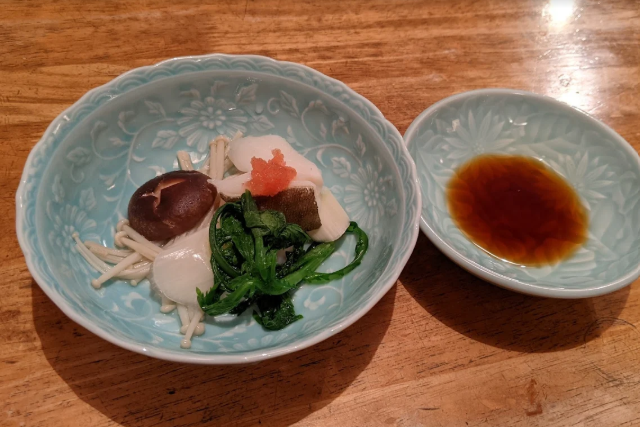

桐生で楽しむ本格和食と豊富なお酒
活気ある空間で心地よいひとときを
活気ある空間と豊富なお酒を楽しむ居酒屋割烹
「割烹 大川」は、肩肘張らずに本格的な和食を楽しめる居酒屋割烹です。
店内はいつも活気に満ちており、初めてのお客様もアットホームな雰囲気でお迎えいたします。
全国から厳選した種類豊富なお酒を取り揃えており、料理に合わせた一杯をご堪能いただけます。
お刺身の盛り合わせや鳥の治部煮、ふんわり焼き上げた卵焼きなどの一品料理から、
締めにはさっぱりとした茶蕎麦やそうめんまで、幅広い和食メニューをご用意しております。
割烹 大川では、新鮮なフグ料理をご提供しております。
職人が丁寧にひく繊細な「ふぐ刺し」、旨味が凝縮された身を温かい出汁で楽しむ「ふぐちり」、そして旨味を余すことなく閉じ込めた締めの「ふぐぞうすい」など、フグの魅力を存分に引き出した品々をご堪能ください。
フグコース
3～4人前 14,000円～
※フグ料理は食材管理と品質保持のため、完全予約制とさせていただいております。必ず事前にお電話にてご予約をお願いいたします。
美しく盛り付けられた透き通る身のコリコリとした食感
フグの出汁がたっぷり染み出た贅沢な温かいお鍋
フグと野菜の旨味を最後の一滴まで楽しむ極上の締め
| 店名 | 割烹 大川 |
|---|---|
| 所在地 | 〒376-0002 群馬県桐生市境野町7-1794-2 |
| 電話番号 | 0277-45-0135 |
| 営業時間 | 18:00～22:00 |
| 定休日 | 水曜日・木曜日 |
| ご予約 | ご予約はお電話からお願いいたします。 |